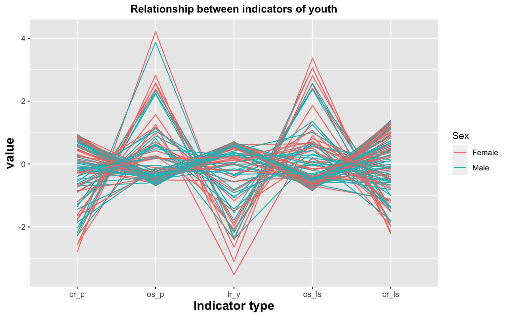
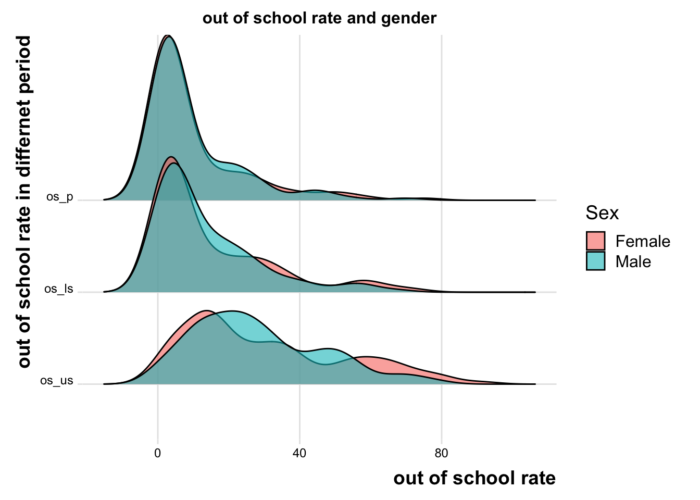
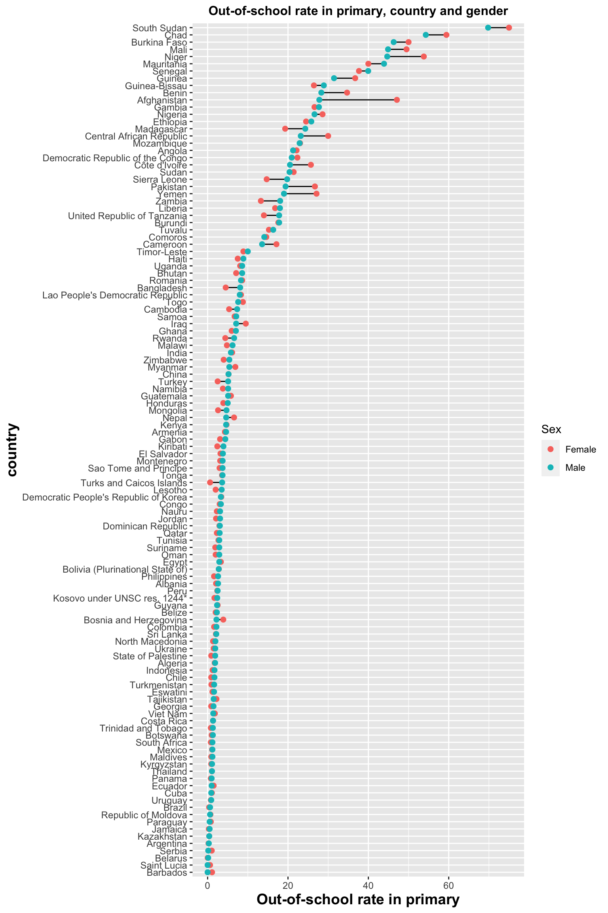
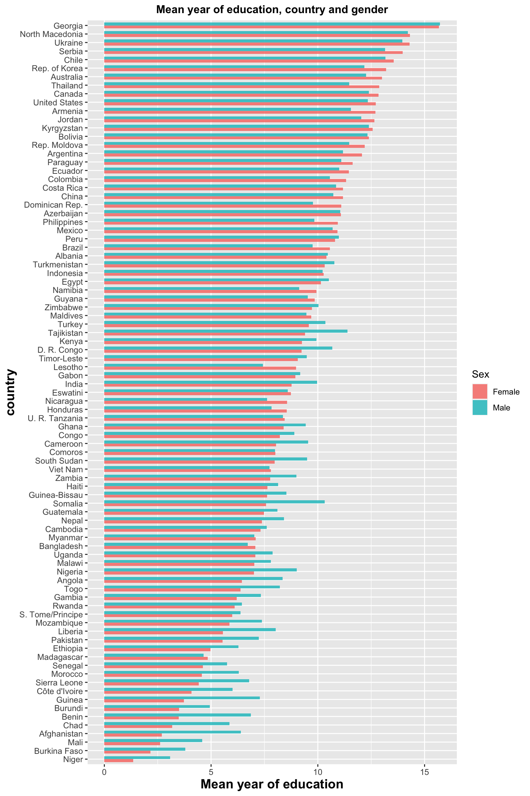

Chapter 4 Results
4.1 Existence of gender inequalities in education
In this chapter, we will figure out the existence of gender inequalities in education. We will focus on the literacy rate, complete school rate, and out-of-school rate in different periods.

Firstly, we want to explore the literacy distribution in genders. In this boxplot, we can know the variability or dispersion of the data. the literacy rate in youth is similar in both genders. The 50% of lr_y(the literacy rate in youth) in both genders are between 90% and 100%, and the median in males and females is around 100%. More specifically, the literacy in females is slightly higher than in males, respectively 99% and 98%. There are outliers, and the minimum rate in females is 29% and 49% for males. For adults, half of lr_a(the literacy rate in adults) in different sex have different dispersion. The rates in females have larger distributions and outliers. In females, most of the rates are between 71% and 96%, while most of the data in the male are higher than in females, and 50% of male rates are between 82% and 98%. The median in males(95%) is slightly higher than 2% in females(93%).
In short, the literacy rates in youth have higher literacy rates than the literacy rate in adults in both genders. It illustrates that education has been improved a lot in both genders. In the past, literacy rates in males are higher than in females, and now literacy rates in females have better performance than in males. However, there are many countries in outliers that have a low literacy rate. We still need to improve education in those countries. We also will figure out if this situation is related to the developing regions.
Next is to analyze the distribution of complete school rate in primary school, lower secondary, and upper secondary. In general, the complete school rate in primary school is higher than in lower secondary and then upper secondary. The maximum rates of females in each period are higher than males, but the minimum rates are lower than males. In primary school, the distribution of rates in each sex is quite similar in the interquartile range, and the median in females is higher than in males. In lower secondary, the complete school rates in females become dispersive and interquartile ranges are larger than in males. There is the same trend in the upper secondary, and the median female complete school rate is lower than males.
In short, some countries achieve higher rates, around 100%, but the trend of complete school rate from young ages to teenage ages is decreasing. The complete school rate in females have more dispersive.
Lastly, We use the ridgeline to show the out-of-school rate in different genders. The ridgeline shows the distribution of out-of-school values for 2 groups. All graphs in primary school, lower secondary, and upper secondary show right skew, which is a good sign, and the distribution of out-of-school rates focuses on the small rates. In primary school and lower secondary, they have a parallel distribution in both genders. The out-of-school rate in lower secondary slightly move to the right. The female rates in lower secondary are higher than male rates in the peak, and then the male rates are higher than females. For upper secondary, it is clear to observe that the distribution moves to the right a lot, and the rates at peak become larger around 20%.
4.2 Possibility of gender discrimination for certain countries in terms of educational underachievement
In the above section, we validate that gender discrimination in education still exists, therefore, we want to explore more on whether it is a general pattern or only certain countries sit on this situation by visualizing higher education attendance rate and mean years of education.

This world map shows that majority countries have no big differences between male figures and female figures. To study how two figures are different, an additional map is visualized for plotting the difference between male and female.

In this map, a diverging color palette is used. In detail, light yellow indicates neutral difference. The warm colors indicate female is higher than male while the cold colors indicate the opposite. We observe that the region with male higher than female is mainly in Africa and West Asia. Then we use a bar chart to explore this pattern more.

In this bar chart, it shows trend that the fewer years of education, the more the male figure is higher than the female figure. Some outliers with at least 7.5 years of schooling but significantly higher male averages than female averages are detected: Tajikistan, D. R Congo, Kenya, Somalia, South Sudan, etc.
In this Cleveland line plot, for countries with rate over 10%, more countries have female rates higher than male rates while countries with below 10% rates are more to have male rates higher than female rates, even though the difference is not as big as mean education year. This helps indicate that countries with a low higher education attendance rate are having gender inequality problem. In the meanwhile, there are also some outliers, such as Nepal, Tajikistan, Bangladesh, Kenya, Somalia, etc. They have higher male rates but with decent higher education attendance rate.
It is worth mentioning that outliers from two plots are highly overlapped. And most outlier countries lie in below average cluster for at least one plot. This situation may also involve in other aspects. Therefore, we investigate the influence of financial and development level of countries.
4.3 Relationship among development level, education achievement and gender

By taking development into account, we discover that in general, least developed countries seem to have lower tertiary completion rate and rates of most more developed countries are above 40%. Moreover, there exists more observations that male rates are much higher than female ones in the facet of least developed regions.It validates our hypothesis that low developed regions are more likely to have unsatisfied education situation and gender discrimination.